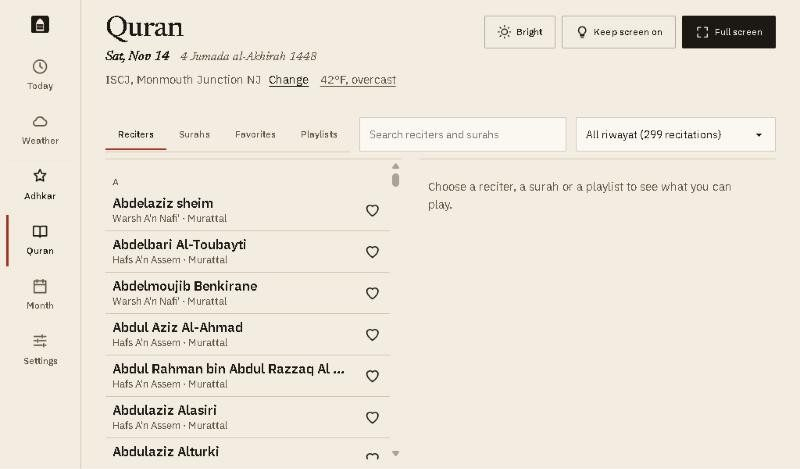
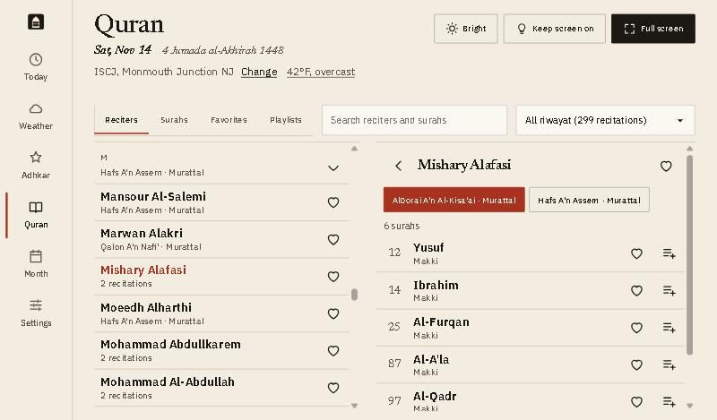
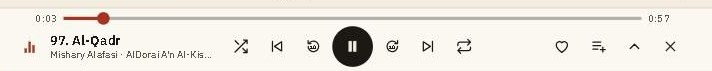

Chapter 7
Quran
Listen to the whole Quran from 299 recitations, and keep your favourites and playlists on the tablet.
Finding a recitation


- Four lists: Reciters, Surahs, Favorites and Playlists.
- Search finds a reciter or a surah by name.
- Riwayah: show all recitations, or only one riwayah such as Hafs A’n Assem or Warsh A’n Nafi’.
- The heart adds a reciter to your favourites.
Playing a surah


- Choose a recitation if the reciter has more than one.
- Tap a surah to play it. The player appears at the bottom.
- The heart adds the surah to your favourites.
- Add to a playlist: pick a playlist, or type a name to make a new one.
The player


From left to right:
- The timeline above shows how far through the surah you are. Drag it to move.
- Shuffle, previous surah, back 10 seconds, play or pause, forward 10 seconds, next surah.
- Repeat: tap to go from off, to the whole list, to this surah only.
- On the right: heart, add to a playlist, open (the queue, and the playback speed), and close, which stops playing.
Playlists
Open the Playlists list to play one, rename it or delete it. Surahs can be moved up and down inside a playlist.
Good to know
- When an adhan or alert plays, the recitation pauses, and carries on afterwards.
- Recitations stream from mp3quran.net, so they need the internet.
- Favourites, playlists and where you stopped are kept on this tablet.